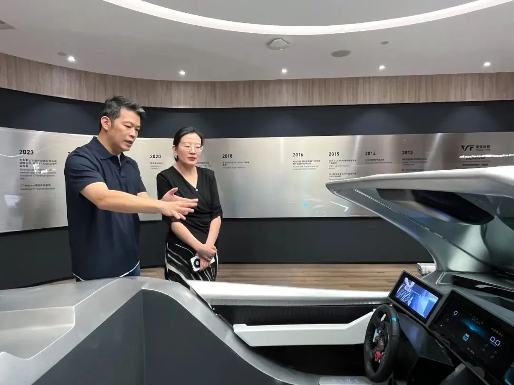
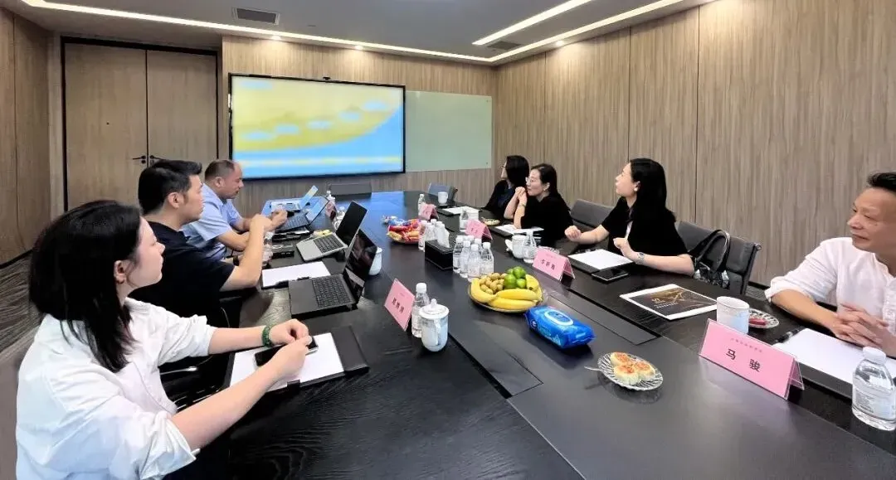

Recently, a delegation led by Mr. Zong Wen, Deputy Director of the Economic Bureau of the Taiwan Affairs Office of the State Council, visited Voyager Tech for research and inspection. Through on-site visits, technical demonstrations and panel discussions, they gained an in-depth understanding of Voyager Tech's innovation achievements and its practices in cross-strait industrial collaboration.
Deputy Director Zong focused on visiting the Shanghai showroom of Voyager Tech, where he listened to detailed briefings on the R&D progress of core products including the VT-Pilot assisted driving series, VT-Vulcan intelligent domain controller series and VT-NAVI integrated perception solutions. He fully affirmed the practicality and functional safety of the VT product series and spoke highly of Voyager Tech's down-to-earth entrepreneurial spirit in the intelligent mobility sector.



At the panel discussion, Brian Chen, Founder and CEO of Voyager Tech, shared in detail the company's development journey over more than a decade and its future direction. He said, “Voyager Tech has always been focused on the field of artificial intelligence, deeply cultivating the R&D and commercial deployment of key technologies in intelligent perception, decision-making and control systems. Relying on the mainland's complete industrial chain layout and vibrant innovation ecosystem, we are now actively exploring the extension from mature in-vehicle applications to the field of general artificial intelligence, and promoting the transfer and application of related technological achievements across the strait.”
Deputy Director Zong listened carefully to the company's technological advantages, market conditions and future development plans. He affirmed the company's initiatives to take root on the mainland and actively integrate into the mainland's AI industry trends, and expressed the hope that the company will continue to strengthen confidence, attract more young people from Taiwan to come to the mainland for employment and entrepreneurship, go all out to explore the international market, and achieve high-quality development.
In the future, Voyager Tech will continue to be driven by technological innovation, advance the implementation and exchange platform building of cross-strait AI industry collaboration in the process of deepening cross-strait economic and cultural integration, help jointly cultivate and improve cross-strait youth talent, and inject momentum into and contribute to the in-depth integrated development of cross-strait economy and culture.